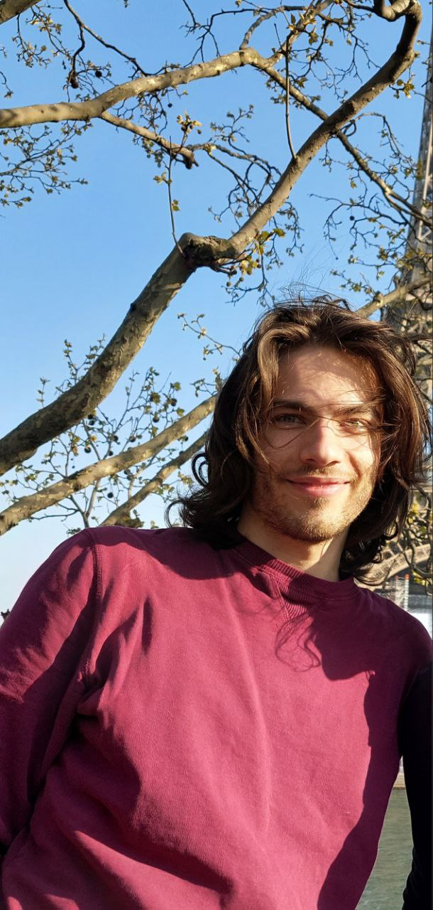

Giacomo Nanni

Hi! I am a PhD student in a cotutelle program between Alma Mater Studiorum – Università di Bologna (Italy) and Ruhr-Universität Bochum (Germany), under the supervision of Christian Lehn and Giovanni Mongardi .
My research lies in algebraic and complex geometry, focused especially on hyperkähler manifolds, Lagrangian fibrations, and Nikulin orbifolds.
Here is my CV.
Contact
- Email: giacomake itmo.nanni1harder3fake@unibo.it
- Email: giacrandomomo.nanni.majunkth@gmail.com
- Institutional website: www.unibo.it/sitoweb/giacomo.nanni13
Dipartimento di Matematica
Università di Bologna
Piazza di Porta S. Donato 5
40126, Bologna, Italy
Where I will be
- 05.09 – 31.10
- Guest at Research Institute for Mathematical Sciences, Kyoto University, Japan
- 23.11 – 26.11
- Participant at Workshop POK0 "Positivity on K-trivial varieties", Nice, France
- 26.11
- Invited speaker at Séminaire d'Algèbre, géométrie, topologie, Nice, France
Research
Research Interests
My interests include:
- Hyperkähler manifolds
- Singular symplectic varieties
- Moduli spaces (of coherent sheaves, Bridgeland stable objects...)
- Algebraic and complex geometry in a broad sense
Publications
Preprints
- Lagrangian fibrations on Nikulin-type orbifolds. arXiv preprint (2025).
Papers
- Monodromy of Nikulin orbifolds. To appear in Kyoto J. Math. arXiv:2503.14441.
- Classification of Lagrangian planes in generalised Kummer manifolds. Math. Z. 314 (2), Art. 30 (2026). doi:10.1007/s00209-026-04109-1.
Talks & Posters
- Talk at Algebraic Geometry Seminar, Kyoto University, Kyoto, Japan (10.2026) – notes
- Talk at Seminarium Geometria Algebraiczna, Uniwersytetu Jagiellońskiego, Krakow, Poland (04.2026)
- Talk at Séminaire de Géométrie complexe, Institut Elie-Cartan, Nancy, France (02.2026)
- Talk at Oberseminar Algebraische und Komplexe Geometrie, Ruhr-Universität, Bochum, Germany (10.2025)
- Poster at GAEL XXXII, Toulouse, France (06.2025)
- Talk at PhD Open Day, Bologna, Italy (03.2025)
- Talk at Geometric Methods in Representation Theory, University of North Carolina, Chapel Hill, USA (11.2024)
- Poster at Ricercatori in algebra e geometria, Milano, Italy (09.2024)
- Poster at New perspectives on hyperkähler manifolds, Cetraro, Italy (09.2024)
- Junior talk at LEGAL, Teresópolis, Rio de Janeiro, Brazil (03.2024)
Teaching
Tutor for some courses of the Alma Mater Studiorum - Università di Bologna:2024–2025
- Aritmetica e Gruppi (BSc Mathematics)
- Geometria 2 – Topology (BSc Mathematics)
2023–2024
- Algebra e Geometria (Linear Algebra, BSc Physics)
- Algebra 1 (BSc Mathematics)
- Algebra 2 (BSc Mathematics)
- Geometria 2 – Topology (BSc Mathematics)
2022–2023
- Algebra e Geometria (Linear Algebra, BSc Physics)